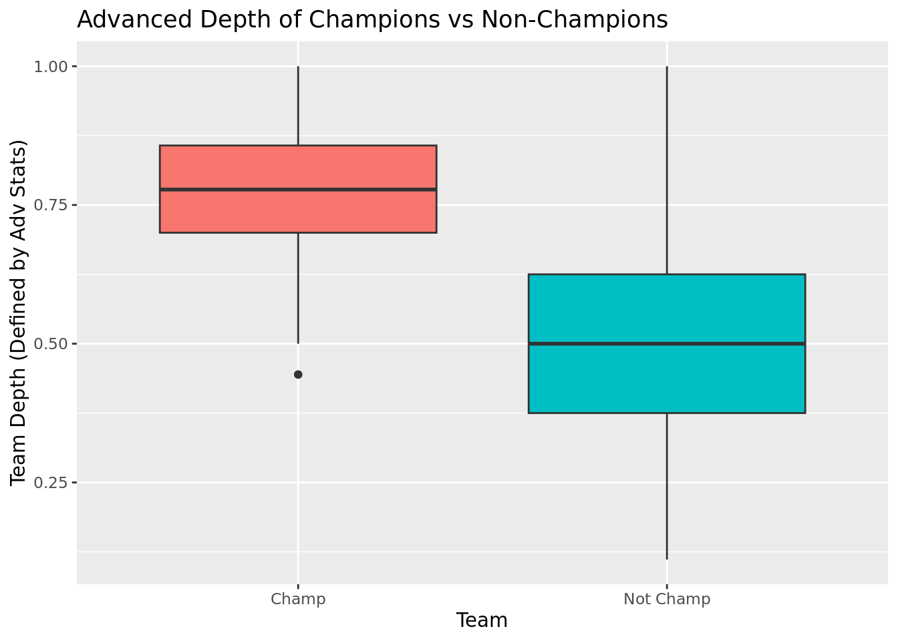

library(tidyverse)
library(tidymodels)The Nexus between Team Depth and NBA Championship
by Team AAAW: Akhilesh Chegu, William Yan, Anthony Tarakji, Audrey Patterson
Introduction:
The National Basketball Association (NBA) is the most popular premiere basketball league in the world (https://www.history.com/this-day-in-history/nba-is-born). It produces data from every one of the 400-500 players in the league every season, leading to several million data points across NBA history (https://www.nba.com/stats). Every year, many models are developed to evaluate team strength and predict the success of the team.
Team depth is the overall quality of players in a sports team, especially those besides the team’s star players. (https://www.elartedf.com/examining-squad-depth-importance/). A team with good depth has competent players on both their starting lineup and their bench, which allows the team to withstand injuries and to have more flexibility for strategic adjustments. However, despite the importance of team depth, there is no established metric to measure it in the NBA. Quantitative analysis of the connection between team depth and team success is still missing. Many current models that predict the winner of the NBA did not consider team depth as a factor. For instance, the state-of-the-art NBA prediction model developed by Cheng et al used 14 basic technical features, such as 3 points, field goals, and number of steals without considering the team depth (https://www.mdpi.com/1099-4300/18/12/450). We believe that the team depth is an important factor that greatly impacts the result of the play-off games. Performing an analysis on this question allows us to develop a systematic method to better understand and assess this often-neglected factor.
In this study, we investigate if the championship winning teams have a significantly greater team depth than the rest of the field. We measure team depth in 3 different methods to quantify team depth: (1) Basic statistics approach, (2) Advanced statistics, (3) Combo of Basic and Advanced statistics. We hypothesize that with all 3 measurements, the depths of championship winning teams would be significantly higher than those of the other teams because team depth has a positive effect on the team’s performance. We will create a model to predict championship win using team depth, demonstrating the real world value of our findings.
NBA play-off data (https://www.kaggle.com/datasets/robertsunderhaft/nba-playoffs) from 1990-2022 was collected by Robert Sunderhaft, who web-scraped it from Basketball Reference, a public database of NBA statistics collated by Sports Reference LLC. He constantly updates the dataset and the last update was 9 months ago. We consider basic quantitative statistics such as points per game, assists per game, and rebounds per game to construct team depth in the basics statistics approach. We consider advanced quantitative statistics such as Player Efficiency Rating and win share to construct team depth in the advanced statistics approach. We use all basic and advanced statistics in the combo approach. Championship win data was not in the initial dataset but will be manually labeled. This will be the categorical data that our logistic model will be predicting.
Although there are no obvious ethical issues with the NBA data, there are some functional limitations. For instance, the “basketball skill” is not a guaranteed variable and can change with each game. Another issue that arises is that some data, like percentages, blocks, turnovers, and other advanced statistics, weren’t collected for players early in this dataset, so there are null values instead.
In regards to the specific hypothesis that we are addressing, the null hypothesis states that the true squad depth for champions minus the true squad depth for non-champions will equal zero, meaning that there is no statistical difference between the two measured teams. Our alternate hypothesis is that the true squad depth for champions minus the true squad depth for non-champions will be greater than zero, signifying a significant statistical relationship. This means that we can reject the null hypothesis if we were to get a p-value less than .05 and we cannot fail to reject it if it is greater than .05.
\(H_0:\) \(\mu_{champ} - \mu_{nochamp} = 0\)
\(H_A:\) \(\mu_{champ} - \mu_{nochamp} > 0\)
Methodology
AAAW_playoff_stats <- read_csv("data/AAAW_updatedplayoffStats.csv")Rows: 10648 Columns: 51
── Column specification ────────────────────────────────────────────────────────
Delimiter: ","
chr (3): player, pos, team_id
dbl (48): season, age, g, gs, mp_per_g, fg_per_g, fga_per_g, fg_pct, fg3_per...
ℹ Use `spec()` to retrieve the full column specification for this data.
ℹ Specify the column types or set `show_col_types = FALSE` to quiet this message.glimpse(AAAW_playoff_stats)Rows: 10,648
Columns: 51
$ season <dbl> 2022, 2022, 2022, 2022, 2022, 2022, 2022, 2022, 2022,…
$ player <chr> "Omer Yurtseven", "Kessler Edwards", "Draymond Green"…
$ pos <chr> "C", "SF", "PF", "SF", "PG", "PF", "C", "PF", "SG", "…
$ age <dbl> 23, 21, 31, 34, 26, 26, 29, 33, 28, 23, 24, 28, 27, 2…
$ team_id <chr> "MIA", "BRK", "GSW", "PHI", "NOP", "DEN", "UTA", "ATL…
$ g <dbl> 9, 2, 22, 12, 6, 5, 6, 5, 5, 6, 9, 18, 10, 6, 13, 4, …
$ gs <dbl> 0, 0, 22, 12, 0, 5, 6, 3, 0, 0, 0, 18, 10, 6, 13, 4, …
$ mp_per_g <dbl> 4.2, 3.5, 32.0, 26.6, 10.0, 32.0, 32.8, 22.4, 15.2, 6…
$ fg_per_g <dbl> 1.3, 0.0, 3.1, 3.0, 1.0, 4.6, 3.5, 3.6, 1.2, 0.0, 0.3…
$ fga_per_g <dbl> 2.0, 0.0, 6.5, 7.4, 3.0, 10.8, 5.5, 9.0, 3.0, 1.2, 0.…
$ fg_pct <dbl> 0.667, NA, 0.479, 0.404, 0.333, 0.426, 0.636, 0.400, …
$ fg3_per_g <dbl> 0.0, 0.0, 0.4, 2.6, 0.8, 0.6, 0.0, 0.8, 0.8, 0.0, 0.2…
$ fg3a_per_g <dbl> 0.2, 0.0, 1.8, 6.3, 2.3, 3.0, 0.0, 3.0, 2.2, 0.5, 0.2…
$ fg3_pct <dbl> 0.000, NA, 0.205, 0.408, 0.357, 0.200, NA, 0.267, 0.3…
$ fg2_per_g <dbl> 1.3, 0.0, 2.8, 0.4, 0.2, 4.0, 3.5, 2.8, 0.4, 0.0, 0.1…
$ fg2a_per_g <dbl> 1.8, 0.0, 4.8, 1.1, 0.7, 7.8, 5.5, 6.0, 0.8, 0.7, 0.2…
$ fg2_pct <dbl> 0.750, NA, 0.581, 0.385, 0.250, 0.513, 0.636, 0.467, …
$ efg_pct <dbl> 0.667, NA, 0.507, 0.579, 0.472, 0.454, 0.636, 0.444, …
$ ft_per_g <dbl> 0.1, 0.0, 1.4, 0.0, 1.2, 4.0, 5.0, 2.2, 0.8, 0.0, 0.0…
$ fta_per_g <dbl> 0.3, 0.0, 2.1, 0.1, 1.3, 5.6, 7.3, 2.2, 1.0, 0.0, 0.0…
$ ft_pct <dbl> 0.333, NA, 0.638, 0.000, 0.875, 0.714, 0.682, 1.000, …
$ orb_per_g <dbl> 0.1, 0.0, 1.2, 0.8, 0.3, 3.6, 3.5, 0.4, 0.2, 0.3, 0.0…
$ drb_per_g <dbl> 0.7, 0.0, 6.0, 2.3, 1.2, 3.6, 9.7, 3.8, 0.4, 0.2, 0.2…
$ trb_per_g <dbl> 0.8, 0.0, 7.2, 3.1, 1.5, 7.2, 13.2, 4.2, 0.6, 0.5, 0.…
$ ast_per_g <dbl> 0.3, 0.5, 6.3, 0.8, 0.7, 2.6, 0.5, 0.8, 1.4, 0.5, 0.0…
$ stl_per_g <dbl> 0.0, 0.5, 1.1, 1.0, 0.2, 0.4, 0.2, 0.2, 0.2, 0.2, 0.0…
$ blk_per_g <dbl> 0.1, 0.0, 1.0, 0.3, 0.2, 1.2, 1.0, 0.0, 0.0, 0.0, 0.0…
$ tov_per_g <dbl> 0.0, 0.5, 2.7, 1.1, 0.7, 1.6, 1.3, 1.0, 0.4, 0.2, 0.0…
$ pf_per_g <dbl> 0.2, 1.5, 4.0, 1.9, 0.5, 2.8, 3.2, 1.2, 1.4, 1.0, 0.0…
$ pts_per_g <dbl> 2.8, 0.0, 8.0, 8.6, 4.0, 13.8, 12.0, 10.2, 4.0, 0.0, …
$ ast_pct <dbl> 16.6, 17.5, 25.7, 4.9, 9.4, 12.0, 2.4, 6.4, 12.4, 10.…
$ blk_pct <dbl> 2.9, 0.0, 3.2, 1.2, 1.4, 3.9, 3.8, 0.0, 0.0, 0.0, 0.0…
$ bpm <dbl> 8.0, -4.4, 0.9, 1.3, -1.1, -1.3, 2.3, -1.8, -2.8, -14…
$ dbpm <dbl> 2.8, 6.4, 2.9, 0.9, -1.0, -2.2, 0.1, -1.3, -1.9, -2.9…
$ drb_pct <dbl> 19.3, 0.0, 20.6, 10.3, 14.7, 14.4, 34.1, 20.9, 3.4, 3…
$ dws <dbl> 0.0, 0.0, 1.0, 0.3, 0.0, 0.0, 0.2, 0.0, -0.1, 0.0, 0.…
$ fg3a_per_fga_pct <dbl> 0.111, NA, 0.271, 0.854, 0.778, 0.278, 0.000, 0.333, …
$ fta_per_fga_pct <dbl> 0.167, NA, 0.326, 0.011, 0.444, 0.519, 1.333, 0.244, …
$ mp <dbl> 38, 7, 703, 319, 60, 160, 197, 112, 76, 36, 16, 688, …
$ obpm <dbl> 5.1, -10.8, -2.0, 0.4, -0.2, 0.9, 2.2, -0.6, -0.8, -1…
$ orb_pct <dbl> 3.0, 0.0, 4.3, 3.6, 3.7, 13.5, 12.5, 2.1, 1.6, 6.2, 0…
$ ows <dbl> 0.1, 0.0, 0.4, 0.0, 0.1, 0.3, 0.6, 0.0, 0.1, -0.1, 0.…
$ per <dbl> 25.8, -2.2, 12.3, 9.9, 11.5, 15.7, 19.4, 10.8, 7.8, -…
$ stl_pct <dbl> 0.0, 7.3, 1.8, 2.0, 0.9, 0.6, 0.3, 0.5, 0.7, 1.5, 0.0…
$ tov_pct <dbl> 0.0, 100.0, 26.4, 12.7, 15.7, 10.8, 13.3, 9.1, 10.4, …
$ trb_pct <dbl> 10.8, 0.0, 12.7, 7.1, 8.9, 13.9, 23.3, 11.3, 2.4, 5.1…
$ ts_pct <dbl> 0.647, NA, 0.534, 0.576, 0.558, 0.520, 0.688, 0.512, …
$ usg_pct <dbl> 22.6, 6.6, 14.0, 15.1, 18.3, 20.2, 14.3, 22.5, 11.0, …
$ vorp <dbl> 0.1, 0.0, 0.5, 0.3, 0.0, 0.0, 0.2, 0.0, 0.0, -0.1, 0.…
$ ws <dbl> 0.2, 0.0, 1.4, 0.3, 0.1, 0.2, 0.7, 0.0, 0.0, -0.2, 0.…
$ ws_per_48 <dbl> 0.228, -0.104, 0.094, 0.049, 0.049, 0.063, 0.182, 0.0…NBA_df <- AAAW_playoff_stats |>
filter(season >= 1990)NBA_df <- NBA_df |>
mutate(team_id = paste(season, team_id, sep = ""))
head(NBA_df)# A tibble: 6 × 51
season player pos age team_id g gs mp_pe…¹ fg_pe…² fga_p…³ fg_pct
<dbl> <chr> <chr> <dbl> <chr> <dbl> <dbl> <dbl> <dbl> <dbl> <dbl>
1 2022 Omer Yu… C 23 2022MIA 9 0 4.2 1.3 2 0.667
2 2022 Kessler… SF 21 2022BRK 2 0 3.5 0 0 NA
3 2022 Draymon… PF 31 2022GSW 22 22 32 3.1 6.5 0.479
4 2022 Danny G… SF 34 2022PHI 12 12 26.6 3 7.4 0.404
5 2022 Devonte… PG 26 2022NOP 6 0 10 1 3 0.333
6 2022 Aaron G… PF 26 2022DEN 5 5 32 4.6 10.8 0.426
# … with 40 more variables: fg3_per_g <dbl>, fg3a_per_g <dbl>, fg3_pct <dbl>,
# fg2_per_g <dbl>, fg2a_per_g <dbl>, fg2_pct <dbl>, efg_pct <dbl>,
# ft_per_g <dbl>, fta_per_g <dbl>, ft_pct <dbl>, orb_per_g <dbl>,
# drb_per_g <dbl>, trb_per_g <dbl>, ast_per_g <dbl>, stl_per_g <dbl>,
# blk_per_g <dbl>, tov_per_g <dbl>, pf_per_g <dbl>, pts_per_g <dbl>,
# ast_pct <dbl>, blk_pct <dbl>, bpm <dbl>, dbpm <dbl>, drb_pct <dbl>,
# dws <dbl>, fg3a_per_fga_pct <dbl>, fta_per_fga_pct <dbl>, mp <dbl>, …NBA_df <- NBA_df |>
filter(g >= 4,
mp_per_g >= 10)Data Cleaning (Done Above)
Reorder the dataset in such a way that it is done by team by year. Filter out all players who played less than 10 minutes per game and all years before 1990.
Append new row of champions by year
Quantification of Team Depth using Basic Depth, Advanced Depth, and Combo Depth
We quantify team depth using this general equation: \(\#Quality Players / \#Rotation Players\)
Rotation players are those with more than 10 minutes per game on average).
We propose 3 different ways to define quality player, thus creating 3 ways to quantify team depth (Basic Depth, Advanced Depth, Combo Depth).
Analysis Methods: Permute with Normal distribution for diff in means
Permuting allows us to construct a null distribution by randomizing the observations by Championship and Non-championship. Permuting to test for significance also allows us to measure the quality of the inference we make. Specifically, in this case, we use constructed datasest of the null hypothesis (depth_championship - depth_nonchampions == 0) by the permute approach. This process is repeated for the basic, advanced, and combo stats. We use permute shuffling to construct the probability that the observed difference in depth parameters is as different as or more different than they are between championship and non-championship teams. The permute shuffling allows us to randomize the observation which will minimize the effect of confounding variables on the mean team depth. Additionally, using permute shuffling is justified by the fact that there are 33 championship winning teams and 400+ non-championship winning teams, giving a big enough n for both to make the comparison viable.
Modeling
If our hypothesis holds true and the team depth does have an effect on championship, we will identify the quantification of team depth that resulted in the smallest p value (greatest significant difference). We will then fit this team depth metric to a logistic model to predict whether the team wins the championship, showing the real-life application of our statistical finding.
Legend:
| \(H_0\) | Null Hypothesis: The true squad depth for champions minus the true squad depth for non-champions will equal zero. |
|---|---|
| \(H_a\) | Alternate hypothesis: The true squad depth for champions minus the true squad depth for non-champions will be greater than zero. |
| \(\bar{x_c}\) | Sample mean squad depth for champions |
| \(\bar{x_n}\) | Sample mean squad depth for champions |
| \(\mu_c\) | Population mean squad depth for champions
|
| \(\mu_n\) | Population mean squad depth for non-champions |
For now, let’s start with visualizing and analyzing each group of stats.
Part 1: Basic stats
Categories:
Points Per 36 minutes: (points per game / minutes per game) *36 > 16
- > ~60th percentile of pp36 from website below
Rebounds Per 36 minutes: (rebounds per game / minutes per game) *36 > 6.5
- > ~60th percentile of rp36 from website below
Assists Per 36 minutes: (assists per game / minutes per game) *36 > 3.5
- > ~60th percentile of ap36 from website below
To calculate Basic Depth per team:
Numerator = #players who met the pp36 threshold | #players who met the rp36 threshold | #players who met the ap36 threshold
Denominator = #players in rotation(played >=10 ppg)
This should be a number between 0 and 1 that measures the proportion of "quality" players in the team's rotation
Citation: https://www.basketballreference.com/leagues/NBA_2021_per_minute.html
NBA_df_basic <- NBA_df |>
mutate(pp_36 = pts_per_g / mp_per_g * 36,
rp_36 = trb_per_g / mp_per_g * 36,
ap_36 = ast_per_g / mp_per_g * 36)NBA_df_basic |>
ggplot(aes(x = pp_36)) +
geom_histogram(binwidth = 1, fill = "blue") +
labs(
x = "Points Per 36 Minutes",
y = "Number of Players",
title = "Distribution of Points Per 36 Minutes Across
NBA Playoff Players"
)
NBA_df_basic |>
ggplot(aes(x = rp_36)) +
geom_histogram(binwidth = 0.5, fill = "orange") +
labs(
x = "Rebounds Per 36 Minutes",
y = "Number of Players",
title = "Distribution of Rebounds Per 36 Minutes Across
NBA Playoff Players"
)
NBA_df_basic |>
ggplot(aes(x = ap_36)) +
geom_histogram(binwidth = 0.3, fill = "red") +
labs(
x = "Assists Per 36 Minutes",
y = "Number of Players",
title = "Distribution of Assists Per 36 Minutes Across
NBA Playoff Players"
)
The points per 36 minutes distribution is approximately normally distributed with a center of around 12 pp36.
The rebounds per 36 minutes distribution is right skewed with a median of approximately 5 rp36 and a mean of around 6 rp36.
The assists per 36 minutes distribution is right skewed with a median of approximately 2.5 ap36 and a mean of around 3 ap36.
Qual_player_df_basic <- NBA_df_basic |>
filter(pp_36 > 16 | rp_36 > 6.5 | ap_36 > 3.5) |>
group_by(team_id) |>
summarise(count_qual = n())
All_rot_players_df <- NBA_df |>
group_by(team_id) |>
summarise(count_rot = n())
Basic_df <- Qual_player_df_basic |>
left_join(All_rot_players_df, by = "team_id")
Basic_df# A tibble: 496 × 3
team_id count_qual count_rot
<chr> <int> <int>
1 1990BOS 7 8
2 1990CHI 7 9
3 1990CLE 5 7
4 1990DET 8 8
5 1990HOU 5 7
6 1990LAL 6 8
7 1990MIL 6 7
8 1990NYK 6 8
9 1990PHI 5 7
10 1990PHO 6 7
# … with 486 more rowsBasic_df <- Basic_df |>
mutate(Basic_depth = count_qual / count_rot,
Championship = if_else(team_id %in% c("1990DET", "1991CHI", "1992CHI",
"1993CHI", "1994HOU", "1995HOU","1996CHI", "1997CHI", "1998CHI",
"1999SAS", "2000LAL", "2001LAL", "2002LAL", "2003SAS", "2004DET",
"2005SAS", "2006MIA", "2007SAS", "2008BOS", "2009LAL", "2010LAL",
"2011DAL", "2012MIA", "2013MIA", "2014SAS", "2015GSW", "2016CLE",
"2017GSW", "2018GSW", "2019TOR", "2020LAL", "2021MIL", "2022GSW"),
"Champ", "Not Champ" ))Results Part 1: Analysis of Basic Depth of Championship Winning Teams vs Other Playoff Teams
In this section, we evaluate the results of our basic model's calculation of team depth of championship winning teams and other teams. We expect that teams that win championships are likely better than teams that do not and should thus have a higher team depth. We want to determine whether there is an appreciable difference in squad depth for teams that win championships and teams that do not for our basic model.
Basic_df |>
ggplot(
aes(x = Championship, y = Basic_depth, fill = Championship)
) +
geom_boxplot() +
theme(legend.position = "none") +
labs(title = "Basic Depth of Champions vs Non-Champions",
x = "Team",
y = "Team Depth (Defined by Basic Stats)")
Here we present the squad depth of champions and non-champions in a box-plot format. This allows for a side-by-side comparison of the medians, quartiles, and spread for squad depth for both categories of teams.
The box-plot above shows that there is a limited difference in team depth between champion and non champion teams. It appears that for champion teams, team depth has a tighter spread, a slightly higher median value than for non-champion teams, and quartiles are similarly clustered around the median for both categories.
Basic_df |>
ggplot(
aes(x = Championship, y = Basic_depth, fill = Championship)
) +
geom_violin() +
theme(legend.position = "none") +
labs(title = "Basic Depth of Champions vs Non-Champions",
x = "Team",
y = "Team Depth (Defined by Basic Stats)")
Here we use a violin plot to gain a deeper understanding of where the data points lie. As opposed to the box plot, the violin plot allows us to recognize any local maximums and view how the data is actually distributed within the quartiles.
As shown in the violin plot, non-champ teams have a larger spread when it comes to team depth, but most of the data is distributed very similarly to champion teams. There does appear to be a slightly higher number of champion teams that have a squad depth over 0.8. Both distributions are relatively normal distributed, suggesting that the permute shuffling statistical test is justified.
Statistical Test
Basic_df |>
group_by(Championship) |>
summarize(mean(Basic_depth))# A tibble: 2 × 2
Championship `mean(Basic_depth)`
<chr> <dbl>
1 Champ 0.755
2 Not Champ 0.720Point Estimate: \(\bar{x_c} - \bar{x_n}\) = 0.035
set.seed(4723)
null_dist_basic <- Basic_df |>
specify(response = Basic_depth, explanatory = Championship) |>
hypothesize(null = "independence") |>
generate(reps = 1000, type = "permute") |>
calculate(stat = "diff in means", order = c("Champ", "Not Champ"))Here we use a difference of mean permute shuffle to determine if there is a true difference in the true mean team depth values for champions and non-champions. We use permute shuffling to test for significance because we are working with a sample dataset and want to determine the true values for the population.
visualize(null_dist_basic) +
shade_p_value(obs_stat = 0.035, direction = "greater") +
labs(title = "Null Distribution of (Champion Depth - Non-Champion Depth)
using Basic Statistics",
x = "Difference (Champion Depth - Non-Champion Depth)",
y = "Frequency")
As shown above, there is a moderate likelihood that there is a mean difference greater than the observed mean difference in team depth when the null hypothesis is true. This is specifically shown in that when the true population mean is defined as 0, a medium portion of the distribution will have a mean difference that is greater than the observed mean difference for our sample.
null_dist_basic |>
get_p_value(obs_stat = 0.035, direction = "right")# A tibble: 1 × 1
p_value
<dbl>
1 0.078The p value informs us of the probability of observing the results of a statistical test, given that the null hypothesis is true. The p value tells us that the probability of observing a squad depth difference greater than zero for champion and non-champion teams is 0.078, given that the null hypothesis is true and there is no difference between squad depth for these categories. Our determined p-value is above our value for alpha (0.05), allowing us to determine that there is not enough evidence to reject the null hypothesis and there is not a difference observed in team depth for champions and non-champions for the basic model.
Overall Conclusion:
The box plot and violin plot show that both champion and non-champion teams have a similar distribution of team depth scores. Furthermore, our statistical testing led us to fail to reject the null hypothesis that there is no difference in the true mean squad depths. Thus, we can conclude that the basic model for predicting squad depth does not appear to align with the outcome of championships.
Part 2: Advanced Stats
Categories:
Player Efficiency Rating >=15
>= 60th percentile of per from https://www.basketball-reference.com/playoffs/NBA_2022_advanced.html
Player Efficiency Rating = (PTS + REB + AST + STL + BLK − Missed FG − Missed FT - TO) / GP.
This is already calculated in the dataset.
Win Shares per 48 min >= 0.1
>= 50th percentile (Win shares are distributed across a team so to get an accurate assessment of how many people contributed we need a bit more lenient threshold otherwise it would be egregiously small)
Citation: https://www.basketball-reference.com/playoffs/NBA_2022_advanced.html
Based on the statistical contribution of everyone on the team, the total number of wins on the team gets proportionally distributed to each player, and we calculate the win shares each player contributed per 48 minutes (1 game)
This is already calculated in the dataset.
To calculate Advanced Depth per team:
Numerator = #players who met the PER threshold | #players who met the WS48 threshold
Denominator = #players in rotation (played >=10 ppg)
This should be a number between 0 and 1 that measures the proportion of "quality" players in the team's rotation but based on advanced stats this time
Qual_player_df_adv <- NBA_df |>
filter(per >= 15 | ws_per_48 >= 0.1) |>
group_by(team_id) |>
summarise(count_qual = n())
Adv_df <- Qual_player_df_adv |>
left_join(All_rot_players_df, by = "team_id")NBA_df |>
ggplot(aes(x = per)) +
geom_histogram(binwidth = 1, fill = "blue") +
labs(
x = "Player Efficiency Rating",
y = "Number of Players",
title = "Distribution of Player Efficiency Rating Across
NBA Playoff Players"
)
NBA_df |>
ggplot(aes(x = ws_per_48)) +
geom_histogram(binwidth = 0.02, fill = "orange") +
labs(
x = "Win Shares Per 48 Minutes",
y = "Number of Players",
title = "Distribution of Win Shares Per 48 Minutes Across
NBA Playoff Players"
)The PER distribution is approximately normal with a center at around 13.
The WS/48 distribution is approximately normal with a center at around 0.1.
Adv_df <- Adv_df |>
mutate(Adv_depth = count_qual / count_rot,
Championship = if_else(team_id %in% c("1990DET", "1991CHI", "1992CHI", "1993CHI", "1994HOU", "1995HOU", "1996CHI", "1997CHI", "1998CHI", "1999SAS", "2000LAL", "2001LAL", "2002LAL", "2003SAS", "2004DET", "2005SAS", "2006MIA", "2007SAS", "2008BOS", "2009LAL", "2010LAL", "2011DAL", "2012MIA", "2013MIA", "2014SAS", "2015GSW", "2016CLE", "2017GSW", "2018GSW", "2019TOR", "2020LAL", "2021MIL", "2022GSW"), "Champ", "Not Champ" ))Results Part 2
In this section, we evaluate the results of our advanced model's calculation of team depth of championship winning teams and other teams. We expect that teams that win championships are likely better than teams that do not across their entire lineup and should thus have a higher team depth. We want to determine whether there is an appreciable difference in squad depth for teams that win championships and teams that do not for our basic model.
Adv_df |>
ggplot(
aes(x = Championship, y = Adv_depth, fill = Championship)
) +
geom_boxplot() +
theme(legend.position = "none") +
labs(title = "Advanced Depth of Champions vs Non-Champions",
x = "Team",
y = "Team Depth (Defined by Adv Stats)")
As shown in the box plot, there is a substantial difference in the team depth for champion and non-champion teams. The median squad depth of champion teams and non champion teams is approximately 0.75 and 0.5 respectively, and 1st and 3rd quartiles do not overlap between the two categories. The squad depth for champion teams has a much smaller spread relative to that of the non-champion teams.
Adv_df |>
ggplot(
aes(x = Championship, y = Adv_depth, fill = Championship)
) +
geom_violin() +
theme(legend.position = "none") +
labs(title = "Advanced Depth of Champions vs Non-Champions",
x = "Team",
y = "Team Depth (Defined by Adv Stats)")
The violin plot showcases that there is limited overlap in the distributions of team depth for champion and non-champion teams. Furthermore, a substantial portion of the non-champion teams have a squad depth that is lower than the minimum value of squad depth for champion teams. Both distributions are relatively normally distributed, suggesting that the permute shuffling statistical test is justified.
Adv_df |>
group_by(Championship) |>
summarize(mean(Adv_depth))# A tibble: 2 × 2
Championship `mean(Adv_depth)`
<chr> <dbl>
1 Champ 0.751
2 Not Champ 0.506Point Estimate: \(\bar{x_c} - \bar{x_n}\) = 0.245
set.seed(4723)
null_dist_adv <- Adv_df |>
specify(response = Adv_depth, explanatory = Championship) |>
hypothesize(null = "independence") |>
generate(reps = 1000, type = "permute") |>
calculate(stat = "diff in means", order = c("Champ", "Not Champ"))We use permute shuffling again for the same reason as we did for basic stats.
visualize(null_dist_adv) +
shade_p_value(obs_stat = 0.245, direction = "greater") +
labs(title = "Advanced Distribution of (Champion Depth - Non-Champion Depth)
using Basic Statistics",
x = "Difference (Champion Depth - Non-Champion Depth)",
y = "Frequency")Warning in min(diff(unique_loc)): no non-missing arguments to min; returning Inf
In the null distribution above, we see that there is functionally 0 probability that when the null hypothesis is true that our true mean difference is greater than what we observed in our sample, which is consistent with our p < 0.001 calculation from earlier.
null_dist_adv |>
get_p_value(obs_stat = 0.245, direction = "right")Warning: Please be cautious in reporting a p-value of 0. This result is an
approximation based on the number of `reps` chosen in the `generate()` step. See
`?get_p_value()` for more information.# A tibble: 1 × 1
p_value
<dbl>
1 0The p-value is reported as 0, therefore we can assume that P < 0.001
The p-value informs us of the probability of observing the results of a statistical test or more extreme, given that the null hypothesis is true. The p value tells us that the probability of observing a squad depth difference greater than zero for champion and non-champion teams is < 0.001, given that the null hypothesis is true and there is no difference between squad depth for these categories. Our determined p-value is below our value for alpha (0.05), allowing us to reject the null hypothesis and conclude our alternate hypothesis that there is a significant difference in team depth for champions and non-champions for the basic model. Specifically, champion team depth (using advanced method) is significantly higher than non-champion team depth.
Overall Conclusions:
Our box plot and violin plot provide evidence that there is a substantial difference in the distribution of team depth values for champions and non-champions and that champions generally had a higher team depth value as determined by our advance model. Furthermore, our hypothesis testing allowed us to conclude that there is enough evidence to reject the null hypothesis that there is no difference in true mean team depths between the categories. Thus, we can conclude the alternate hypothesis that there is a significant difference in team depth for champion and non-champion teams.
Part 3: Combo
Definition: players must meet both the requirement of basic stats and advanced stats to be considered as quality player
- (# Quality Basic & Advanced Stats Players) / # Rotation Players
Overall, these 3 quantifications (basic, advanced, combo) of team depth will each be tested to see if championship-winning teams would have a significantly higher team depth.
NBA_df_combo <- NBA_df |>
mutate(pp_36 = pts_per_g / mp_per_g * 36,
rp_36 = trb_per_g / mp_per_g * 36,
ap_36 = ast_per_g / mp_per_g * 36)
Qual_player_df_combo <- NBA_df_combo |>
filter(pp_36 > 16 | rp_36 > 6.5 | ap_36 > 3.5,
per >= 15 | ws_per_48 >= 0.1) |>
group_by(team_id) |>
summarise(count_qual = n())
Combo_df <- Qual_player_df_combo |>
left_join(All_rot_players_df, by = "team_id")Combo_df <- Combo_df |>
mutate(Combo_depth = count_qual / count_rot,
Championship = if_else(team_id %in% c("1990DET", "1991CHI", "1992CHI",
"1993CHI", "1994HOU", "1995HOU","1996CHI", "1997CHI", "1998CHI",
"1999SAS", "2000LAL", "2001LAL", "2002LAL", "2003SAS", "2004DET",
"2005SAS", "2006MIA", "2007SAS", "2008BOS", "2009LAL", "2010LAL",
"2011DAL", "2012MIA", "2013MIA", "2014SAS", "2015GSW", "2016CLE",
"2017GSW", "2018GSW", "2019TOR", "2020LAL", "2021MIL", "2022GSW"),
"Champ", "Not Champ" ))Results Part 3
In this section, we evaluated team depth of championship-winning teams and other teams using the combo stats, (# players who meet basic depth threshold + advanced depth threshold) / #rotation players, to define depth. We want to know if the team depth of championship winning teams is significantly higher than those of the team who did not win the championship.
Combo_df |>
ggplot(
aes(x = Championship, y = Combo_depth, fill = Championship)
) +
geom_boxplot() +
theme(legend.position = "none") +
labs(title = "Combo Depth of Champions vs Non-Champions",
x = "Team",
y = "Team Depth (Defined by Combo Stats)")
As can be seen in the box plot above, there is a significant difference in squad depth for champion and non-champion teams. The median squad depth of champion teams falls around .60 while the medium squad depth of the non-champion team falls a little below .50. There is also no quartile overlap between the two variables meaning that there is little doubt about the greater squad depth of the champion team. The two variables measured have similar ranges.
Combo_df |>
ggplot(
aes(x = Championship, y = Combo_depth, fill = Championship)
) +
geom_violin() +
theme(legend.position = "none") +
labs(title = "Combo Depth of Champions vs Non-Champions",
x = "Team",
y = "Team Depth (Defined by Combo Stats)")
For the champ team the highest frequency of squad depth falls around .60 again, and for not champ teams it falls around .50, suggesting that the champ team's combo depth is higher than the other teams. Further, what we get from this graph is a more widespread, normal distribution of all squad depths, justifying the use of permute shuffling statistical tests.
Combo_df |>
group_by(Championship) |>
summarize(mean(Combo_depth))# A tibble: 2 × 2
Championship `mean(Combo_depth)`
<chr> <dbl>
1 Champ 0.627
2 Not Champ 0.439Point Estimate: \(\bar{x_c} - \bar{x_n}\) = 0.188
set.seed(4723)
null_dist_combo <- Combo_df |>
specify(response = Combo_depth, explanatory = Championship) |>
hypothesize(null = "independence") |>
generate(reps = 1000, type = "permute") |>
calculate(stat = "diff in means", order = c("Champ", "Not Champ"))We use permute shuffling for the same reasons as we do for basic and advanced stats.
visualize(null_dist_combo) +
shade_p_value(obs_stat = 0.188, direction = "greater") +
labs(title = "Combo Distribution of (Champion Depth - Non-Champion Depth)
using Basic Statistics",
x = "Difference (Champion Depth - Non-Champion Depth)",
y = "Frequency")Warning in min(diff(unique_loc)): no non-missing arguments to min; returning Inf
This graph shows the frequency of difference in squad depth from Champion teams vs non champion teams, assuming the null hypothesis was true. The difference that had the highest frequency was 0 difference. The probability that we observe the sample mean difference as large or larger than the observed difference (.188), looks to be pretty much 0, which is consistent with our p<0.001 observation.
null_dist_combo |>
get_p_value(obs_stat = 0.188, direction = "right")Warning: Please be cautious in reporting a p-value of 0. This result is an
approximation based on the number of `reps` chosen in the `generate()` step. See
`?get_p_value()` for more information.# A tibble: 1 × 1
p_value
<dbl>
1 0P value is reported as 0, therefore we can assume that P < 0.001.
The p-value is the strength of evidence against the null hypothesis. If the null hypothesis were true in this scenario, there would be no significant difference in squad depths for champion vs not champion teams and the p value would output a high value for relationship (between champ and non champ teams) differences occurring by chance. Based on what we have seen in the graphs and based on our output p-value (<0.001), we can deduce that the difference between the two variables’ squad depth is of statistical significance and we can thus reject the null hypothesis. This p value indicates that this statistical difference is highly unlikely to have occurred by chance. There is a statistical difference in team (champion vs not champion) squad depths.
Overall Conclusion:
Based on all three of these analysis methods, we found that there is a statistically significant difference between the combo squad depth of champion teams vs non champion teams. This aligns with our alternate hypothesis that the championship winning team has a significantly greater team depth than non-champion teams. The depths of championship winning teams were significantly higher than those of the other teams.
Real Life Application: Logistic Model that Predicts Championship Win Using Combo Depth
This model goes a step further and does not solely look at the difference in squad depth between the two variables. It instead takes a real world scenario (a championship win) and predicts the probability of each variable achieving that scenario. This model will predict the probability of a championship team winning the championship vs a non-championship team based on the advanced data set (the variables that made up the advanced squad depth). We used advanced squad depth because that had the most significant difference between the championship and non-championship
Adv_df <- Adv_df |>
mutate (Championship = as.factor(Championship))
Champ_model <- logistic_reg() |>
set_engine('glm') |>
fit(Championship ~ Adv_depth, data = Adv_df, family = 'binomial') Champ_model |>
tidy()# A tibble: 2 × 5
term estimate std.error statistic p.value
<chr> <dbl> <dbl> <dbl> <dbl>
1 (Intercept) 8.69 1.06 8.21 2.25e-16
2 Adv_depth -9.55 1.45 -6.58 4.77e-11Generalized: \(\log\Big(\frac{p}{1-p}\Big) = \beta_0 + \beta_1 \times Adv\_depth\)
Specific: \(\log\Big(\frac{p}{1-p}\Big) = 8.69 - 9.55 \times Adv\_depth\)
Adv_df <- Adv_df |>
mutate(pred_prob = predict(Champ_model$fit, type = "response"))
ggplot(data = Adv_df) +
geom_point(aes(x = Adv_depth, y = as.numeric(Championship) -1,
color = Championship)) +
geom_line(aes(x = Adv_depth, y = pred_prob)) +
labs(title = "Logistic Model of Adv_depth on Championship",
x = "Team Depth from Advanced Statistics",
y = "Probability of Team Not Winning Championship",
color = "Champion or Not"
)
The y axis is the probability of the team not winning the championship. We can see the dots are representing what the actual observation is whether a team wins a championship or not. Overall, the logistic model has good accuracy as it captures the general trend that a lower team depth leads to higher probability of not winning a championship. However, from the distribution of the dots, teams with advanced team depth > 0.5 contains both championship and non-championship teams, making it hard for the model to predict the success of the team purely based on the team depth.
Conclusion
In conclusion, while the analysis team depth using basic statistics did not show significant difference between the team depth of champion and non-champion teams, analysis using both advanced approach and combo approach showed that the championship winning teams have significantly higher team depth than non-champion teams. Since the quantification of team depth is specifically tuned to NBA statistics, the results are not generalizable to other leagues. If The NBA season is not independent of each other because players play for the same team across multiple seasons, this means that our result can only be applicable to our dataset or similar dataset for the play-off from 1990 to 2021.
The advanced team depth showed the greatest sample difference of 0.245 with p value < 0.001. This is the quantification of team depth with the most significant difference between championship and non-championship teams. We used the advanced team depth as an input to predict the championship outcome of the teams. The model successfully captured the trend that lower team depth means higher probability of not winning the championship.